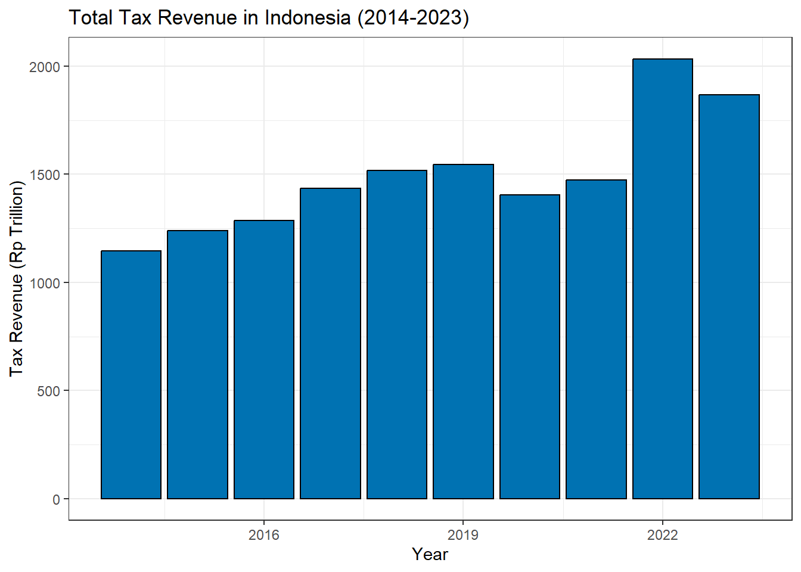

Based on the analysis of the bar graph showing the Total Tax Revenue in Indonesia from 2014 to 2023, it is evident that there has been a consistent growth in tax revenue over the years. This upward trend indicates a positive trajectory for the country’s financial stability and economic development.
Based on the analysis of the line chart depicting Migas & Non-Migas Tax Revenue in Indonesia from 2014 to 2023, there are distinct trends and observations that can guide decision-making and provide insights into future prospects.
Migas Tax Revenue: The blue line representing Migas Tax Revenue shows a relatively flat and low trend over the years. This indicates that there has been minimal growth or fluctuation in Migas-related tax revenue during the period under consideration. Stakeholders in the oil and gas sector may need to assess the reasons behind this stagnation and explore strategies to enhance revenue generation in this area.
Non-Migas Tax Revenue: In contrast, the orange line representing Non-Migas Tax Revenue demonstrates a significant upward trend, especially noticeable after the year 2020. This suggests a substantial increase in tax revenue from non-oil and gas sources, indicating diversification and growth in other sectors of the economy. Decision-makers can leverage this information to focus on sectors contributing to non-migas revenue for future planning and investment.
Future Prospects: Looking ahead, the data implies potential opportunities for revenue growth and economic development in non-migas sectors. Decision-makers can capitalize on the increasing trend in non-migas tax revenue by directing resources and investments towards these sectors. Understanding the differences in revenue trends between Migas and Non-Migas can help in strategic planning and resource allocation to maximize returns and contribute to overall economic prosperity.
Based on the analysis of the bar graph comparing the three main sources of tax revenue in Indonesia from 2014 to 2023, here are some insights and future prospects for decision-making:
Customs and Excise Revenue: This source of tax revenue has shown minimal growth over the years, remaining relatively flat. Decision-makers should consider exploring strategies to potentially increase revenue from customs and excise to contribute more significantly to the overall tax revenue.
Migas Tax Revenue: The Migas tax revenue has also remained relatively stable, with a slight increase observed around 2021. To enhance this revenue source, stakeholders may need to evaluate the factors influencing Migas tax collection and identify opportunities for growth.
Non-Migas Tax Revenue: The Non-Migas tax revenue has experienced substantial growth over the years, showing a significant increase and reaching approximately 1500 RP Trillion by 2023. Decision-makers should focus on sustaining and further expanding this revenue stream through effective tax policies and compliance measures.
Future prospects for decision-making could involve diversifying revenue sources, optimizing tax collection processes, enhancing compliance mechanisms, and implementing targeted policies to support the growth of tax revenue in Indonesia. By leveraging the insights from this analysis, policymakers and stakeholders can make informed decisions to drive sustainable economic development and fiscal stability.
Based on the analysis of the bar graph showing the Growth Rate of Total Tax Revenue (%) from 2014 to 2023, here are insights and future prospects for decision-making:
Fluctuating Growth Rates: The graph illustrates significant fluctuations in the growth rate of total tax revenue over the years. Decision-makers should investigate the factors influencing these fluctuations, such as changes in economic conditions, tax policies, compliance levels, and external factors impacting revenue collection.
Steady Growth vs. Sharp Spikes: While there are periods of steady growth, such as in 2017 and 2019, there are also instances of sharp spikes and drops in the growth rate, notably in 2020 and 2021. Understanding the reasons behind these sudden changes can help in developing strategies to maintain consistent growth and mitigate risks.
Opportunities for Improvement: The graph highlights the potential for substantial growth in tax revenue, as seen in the significant spike in 2022. Decision-makers can capitalize on this momentum by identifying and leveraging opportunities to enhance revenue collection, streamline tax processes, and implement targeted initiatives to sustain growth.
Risk Management: Given the volatility in the growth rate of total tax revenue, it is essential for decision-makers to prioritize risk management strategies. This includes diversifying revenue sources, enhancing data analytics for forecasting, and establishing contingency plans to mitigate the impact of unforeseen events on tax revenue.
Data-Driven Decision-Making: To make informed decisions, stakeholders should focus on data-driven approaches, utilizing insights from the growth rate trends to inform policy formulation, resource allocation, and revenue optimization strategies.
By leveraging the insights from this analysis and adopting a proactive and strategic approach to decision-making, stakeholders can navigate the complexities of tax revenue management effectively and drive sustainable growth in revenue collection over the coming years.
Copyright © 2024 TaxVisionary, Inc. All rights reserved.